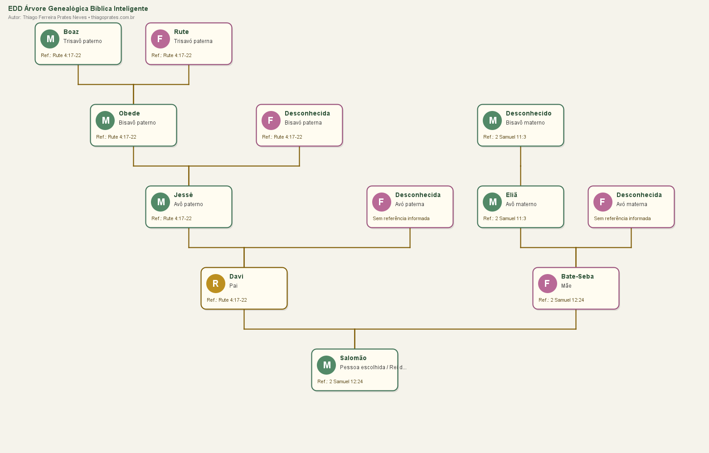
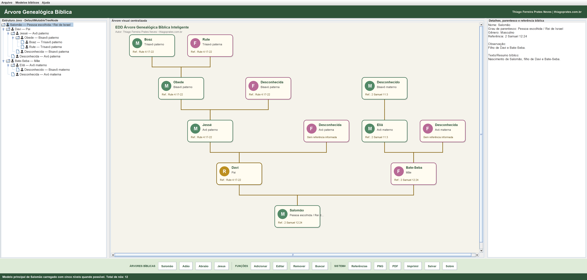
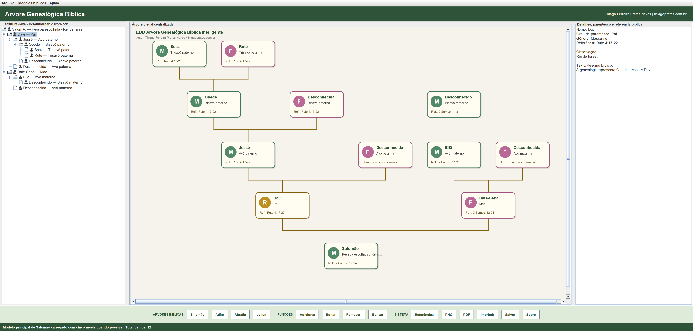
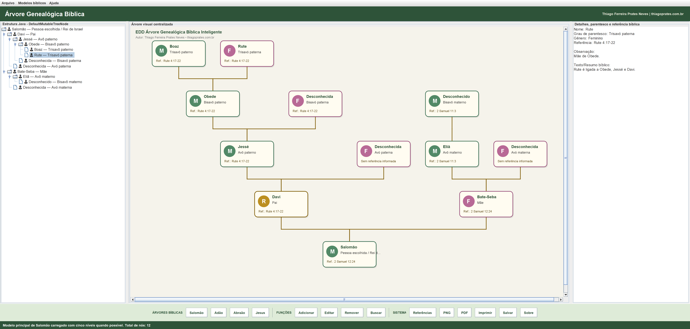
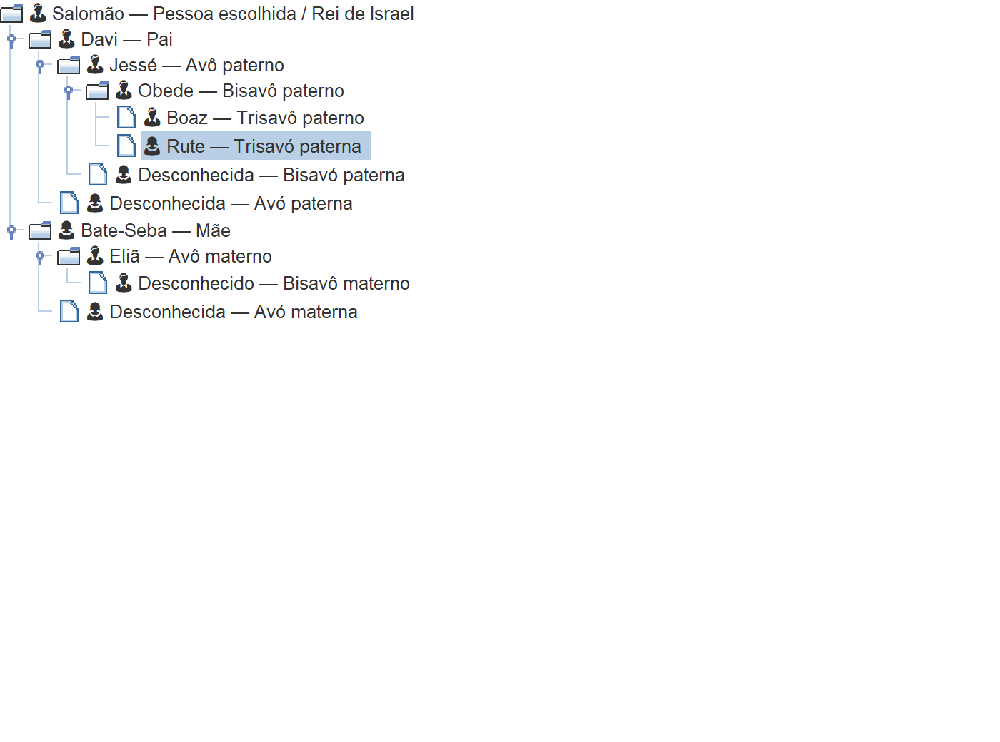
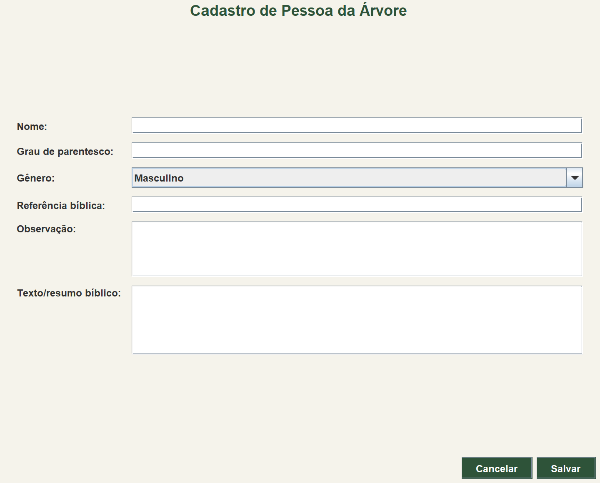
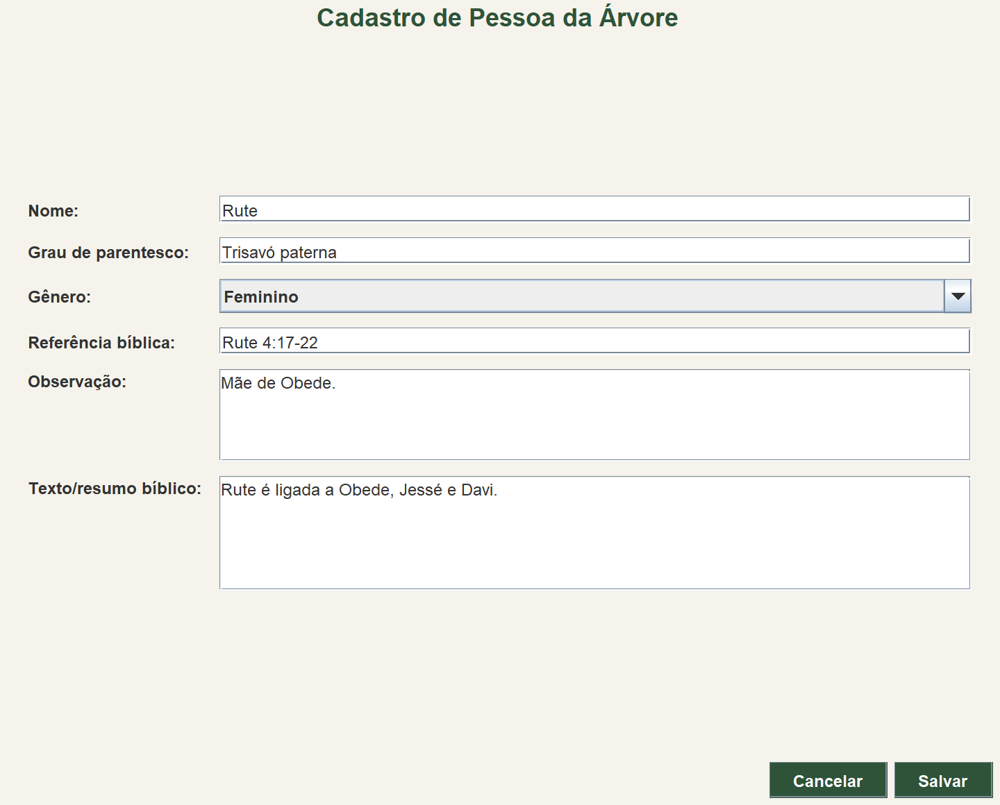
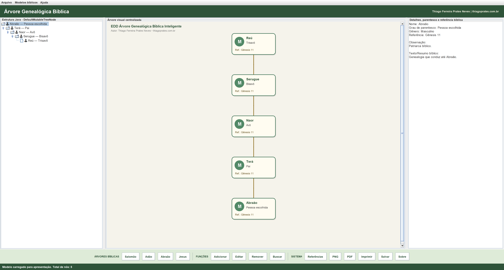
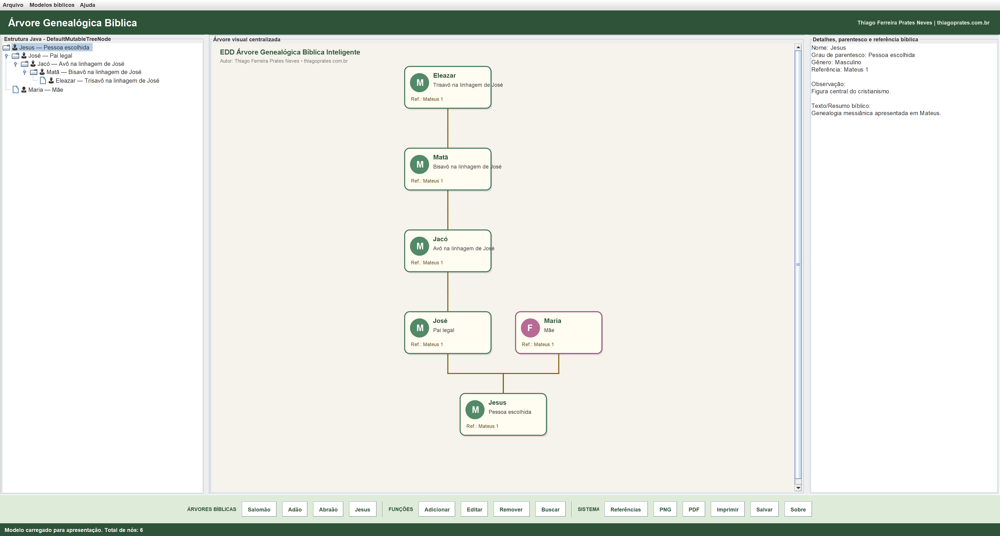
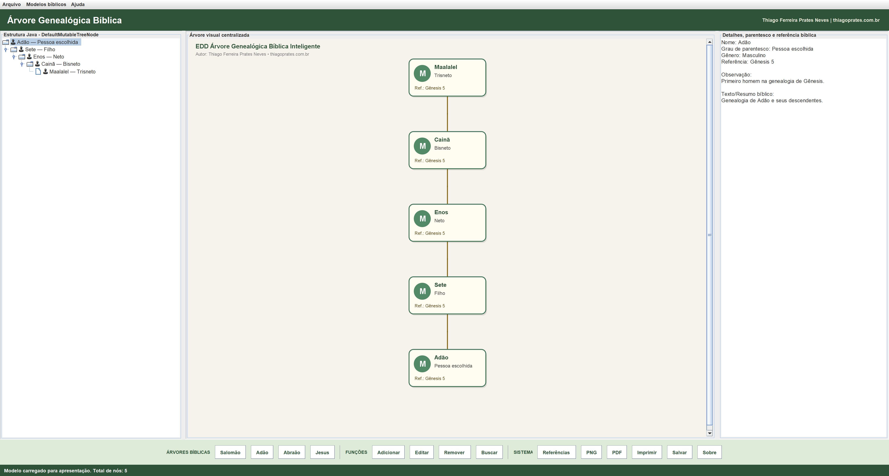

UESB / ADS / ESTRUTURA DE DADOS · 2026.1
Histórias conectadas.
Estruturas que ensinam.
Uma árvore genealógica em Java para explorar ancestralidade, relações hierárquicas e recursividade. Conheça a implementação de Thiago Ferreira Prates Neves.
Conhecer o projetoVer os arquivos Java ↗
Da pessoa escolhida
aos seus ancestrais.
Salomão é a raiz da estrutura. Pais, avós, bisavós e trisavós ocupam os níveis seguintes. Os nomes não localizados nas referências adotadas aparecem como desconhecidos, sem inventar dados.
O projeto utiliza DefaultMutableTreeNode e um percurso recursivo: visita o nó atual e repete o processo para cada filho, até alcançar as folhas. A aplicação Swing oferece visualização, cadastro, edição e consulta.
Esta página apresenta o aplicativo desktop. As telas abaixo são imagens dos componentes reais Java; para executar o programa, consulte as instruções no repositório.
UM PERCURSO PELO APLICATIVO
O projeto, tela por tela.
Dez imagens comentadas. Abra cada imagem para examinar os detalhes na resolução original.
01 · Visão geral do sistema
Apresente as três áreas: estrutura JTree à esquerda, árvore desenhada ao centro e dados da pessoa selecionada à direita. A faixa inferior reúne os modelos e as funções.

Clique na imagem para abrir na resolução original.02 · Árvore completa e cinco níveis
Comece por Salomão, na base do desenho, e siga até os trisavós. O modelo contém 12 nós em cinco níveis. Os registros desconhecidos tornam explícitas as lacunas da pesquisa.
Clique na imagem para abrir na resolução original.03 · Detalhes de Davi
Mostre a seleção de Davi e os campos do painel lateral: nome, parentesco, gênero, referência, observação e resumo bíblico.

Clique na imagem para abrir na resolução original.04 · Detalhes de Rute
Explique a relação Rute → Obede → Jessé → Davi → Salomão. Rute aparece no quinto nível de ancestralidade em relação à pessoa escolhida.

Clique na imagem para abrir na resolução original.05 · Estrutura Java JTree
Explique raiz, nós, ligações e níveis. A estrutura usa DefaultMutableTreeNode. Nesta modelagem, os filhos estruturais representam os ancestrais da pessoa acima, e não seus descendentes biológicos.

Clique na imagem para abrir na resolução original.06 · Formulário de cadastro
Mostre os campos disponíveis para adicionar uma pessoa: nome, parentesco, gênero, referência, observação e resumo. Nome e parentesco são obrigatórios. A imagem exibe o formulário vazio, sem gravar novos dados.

Clique na imagem para abrir na resolução original.07 · Formulário de edição
Use Rute para mostrar como os dados existentes são carregados para edição. Esta imagem não representa uma alteração salva; demonstra o formulário preenchido com os dados do modelo.

Clique na imagem para abrir na resolução original.08 · Modelo de Abraão
Demonstre a troca de modelo e a cadeia Abraão, Terá, Naor, Serugue e Reú. Os mesmos componentes exibem outra árvore com cinco níveis.

Clique na imagem para abrir na resolução original.09 · Modelo de Jesus
Mostre José como pai legal, Maria como mãe e a linhagem adotada de Mateus 1. Destaque que o significado das relações está registrado nos dados.

Clique na imagem para abrir na resolução original.10 · Modelo de Adão
Apresente como exemplo complementar de descendência: Adão, Sete, Enos, Cainã e Maalalel. Este modelo tem direção genealógica diferente e não substitui Salomão na atividade de ascendência.

Clique na imagem para abrir na resolução original.